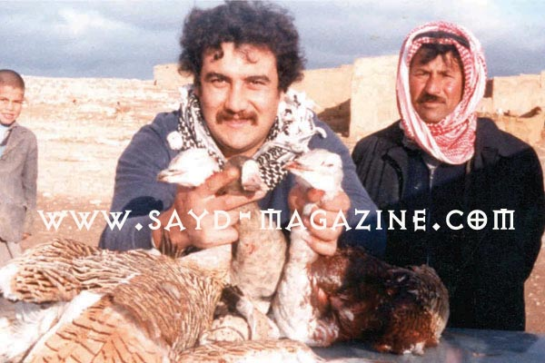
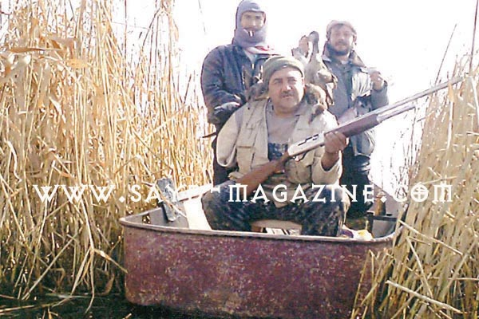
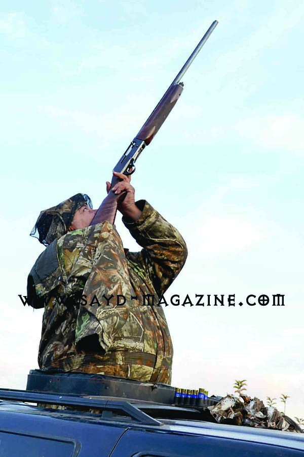

لا يمكن أن تذكر أبرز شخصيات الصيد في لبنان دون أن تلفظ اسم رجل الأعمال أنيس مكاوي، هذا الرجل الصلب الذي لم يمنعه حادث مشؤوم- أدى إلى فقدان ذراعه الأيمن في رالي مارلبورو 1992 حين كان برفقة صديقه بطل لبنان السابق في الرالي والصياد المعروف بيلي كرم- من متابعة هواياته المفضلة في الصيد محافظاً على تفوق واضح في الأداء وإن بيد واحدة، فعرف بين أبناء هوايته بـ"شيخ الصيادين".
دخل أنيس عالم الصيد عام 1972 مقتدياً بوالده الصياد الذي كان له باع طويل في هذا العالم، وقد شدّته الطبيعة بمناظرها الخلابة وأنسته هموم حياة المدن، فأحبَّ هذا العالم بكل تفاصيله: من حبّ الاسكتشاف إلى ممارسة الدقة في التصويب والمغامرات في المطاردة والكمائن للطيور المهاجرة، ومن كرم شيوخ عشائر البدو الذين يشرّعون أبوابهم وموائدهم للضيف، إلى العلاقات الاجتماعية مع فئات وطبقات كثيرة من الناس يجمعها عالم الصيد وحب الطبيعة والبرّ. وقد عرفته صحراء الجزيرة العربية صياداً نموذجياً لامعاً.
أطلق على أنيس لقب "شيخ الصيادين" وهو لقبٌ يطلق في عالم الصيد عادة على الذين يتمتعون بمزايا مهمة، من البراعة في التصويب دون هدر الذخيرة، إلى الخبرة الواسعة بأنواع الطرائد والحيوانات، ومواسم وأماكن صيدها، إلى صيد الطيور الصعبة المنال، والتي تحتاج إلى صبر كثير ومهارة عالية وحنكة كبيرة كطيور الحبارى والحجال.
وقد حمل أنيس هذا اللقب بجدارة، خصوصاً بعد الحادث الذي تعرّض له، فتابع وكأن شيئاً لم يحدث، مستعملاً يده اليسرى للضغط على الزناد وكتف اليد اليمنى لتثبيت البندقية، محققاً أهدافاً يصعب على من يملك ذراعين اثنين تحقيقها.
ويحدثنا أنيس عن الحادث وهو يضحك فيقول:
لقد خاف بيلي كثيراً وهو برفقتي حين كنت أقوم بعملية مطاردة في إحدى رحلات الصيد، وقد أراد أن يخيفني معه في السباق ونجح بقوة، فالرالي "شغلة مرعبة جداً" ولكن القدر شاء أن لا يقف الأمر عند حدود الخوف فانقلبت السيارة وكانت ذراعي في الخارج فسحقت.
هل تلوم بيلي على ما حصل، وكيف هي علاقتك به اليوم؟
أبداً لا ألومه فهذه إرادة الله، وعلاقتي ببيلي علاقة صداقة متينة وأخوّة ، وما زلنا رفاق رحلات الصيد.

بهجمة واحدة.. 3 حبارى بـ3 طلقات يعتزّ الصياد حين يحقق هدفاً صعب المنال لا يمكن لأي شخص أن يحققه بسهولة، وهكذا فإن اصطياد أنيس لثلاثة طيور حبارى بـثلاث طلقات فقط لا يمكن أن يمرّ مرور الكرام في قاموس الصيادين، خصوصاً أن هذا الطائر الذكي يحتاج إلى جهود كبيرة لاصطياده. يقول أنيس "إن الذي يرى الحبارى يعتبر محترفاً في الصيد فكيف الذي يقنصه؟"، ويوضح "أن صيد هذا الطائر يحتاج إلى مشقة لنراه وصبر لتحمل هذه المشقة، وإلى براعة في التوقيت والتصويب لصيده".
ومن المعروف أن هذا الطائر يصطاده الشيوخ الأمراء بصقورهم في رحلات تستمر لأيام في الصحاري، لِما يشكل من متعة للصيد والأكل معاً، ويتضمن صيده استراتيجيات مختلفة عن صيده بالبندقية، خصوصاً أن المعركة قد لا تنتهي لصالح الصقر دائماً، فالحبارى يطلق سائلاً لزجاً من مؤخرته يمكن أن يعمي الصقر أو يلصق جناحيه ببعضهما. ولكن إن أخطأ الحبارى الصقر تكون هذه لحظته الأخيرة.

هل يغري الصيادين التفوق عليك؟أنا لا مشكلة لدي في أن يتفوق عليّ أحد، فأنا أصطاد لأستمتع، ولكن لم أذكر أنّ أحداً تفوّق عليّ، فأنا قضيت أكثر من نصف حياتي أمارس الصيد وبكل ما يتعلق به: من لباس وسلاح وأماكن قنص وغيرها.
هل يستمع الصيادون إلى شيخ الصيادين، أم أنه مجرد لقب واهٍ ؟
أبداً هو لقب ليس سهلاً في عالم الصيد، لأن الخطأ ممنوع عليك، فأنت القُدوة وقائد الرحلة والخبير، ولهذا يستمعون إليك كي يستمتعوا برحلة صيد جميلة ويتجنبوا الأخطار والأذية.
هل هناك أحد من أولادك يهوى الصيد؟
نعم، إبنى أحمد، وأعتبره يدي اليمنى، فهو حين يصعد من فتحة سقف السيارة المجهزة للصيد لا ينزل بسهولة منها، ويحقق أهدافاً رائعة.
مَن أثَّر بك من رفاق الصيد خلال رحلاتك؟
يصمت لبرهة ويقول: المرحوم باسل الأسد. أعتز ّكثيراً بالرحلات التي ترافقنا بها مع مجموعة رائعة من الأصدقاء، من لبنان وسوريا، ويتابع: باسل كان متواضعاً جداً ولا يتباهى بأنه ابن الرئيس، ويتميز بالكرم، وقد كان نبيهاً يلاحظ أدقّ التفاصيل، وكان مغرماً بالفروسية.
كتاب ذكرياتي
حين تدخل بيت أنيس في بيروت أو فيلّته الجبلية في بحمدون ترى الكثير من الطيور المحنّطة الموقّعة ببراعة الدكتور زكريا مكاوي (قريب أنيس، المتخصص بمصر والمعروف بتحنيطه للطيور وليس بتصبيرها، نعرف الفرق بين الاثنين في مقابلة لاحقة). يشير أنيس أنّ كلّ طير حنّطه له ذكرى معه: كيف وأين قنصه؟ ومن كان برفقته؟ يقول: "هذه الطيور كتاب ذكرياتي".
سلاح... وأخلاقيات
لدى أنيس ترسانة من بنادق الصيد، إلاّ أنه يفضّل بندقيته "براونيغ ب 80" التي رافقته لسنوات طويلة من دون أن تتعرض لأي مشكلة بالرغم من كثرة استعمالها. كما لديه بندقية محببة تأتي في المرتبة الثانية وهي"بِريتا 302" من إيطاليا. أما عن علاقته بالخرطوش فهو يشيد بالنوع الأميركي رغم غلاء ثمنه لأنه "مدروس جيداً ويحقق المعجزات في الصيد"، ويستعمله في اصطياد الطيور الكبيرة التي تطير على ارتفاعات شاهقة، أما الطيور العادية فيستعمل الخرطوش اللبناني من نوعية جيدة.
في أخلاقيات الصيد يؤكد أن الصياد الحقيقي لا يقنص طيراً في غير موسم صيده، كما أن معرفته الواسعة بالطيور تجعله ينتبه أن لا يقتل أنثى خصوصاً في موسم التَزاوج، كما ويسخر من الذين يتباهون بصيد أعداد هائلة من "المطوق" معتبراً أن هذا الطائر سهل المنال كثيراً ولا يحتاج صيده إلى مرجلة ،خصوصاً في ظلّ ماكينات الصوت التي تحضره ليرفرف فوق رأس الصياد منتظراً قنصه.
وعن الصيد والبيئة يشرح "ما عانينا يوماً في لبنان من نقص في الطيور بسبب الصيد، إنما بسبب رش المبيدات في تركيا وفي اليونان، ومن تقلّص الأحراش بسبب الحرائق". ويخبرنا أنه يعرف مكاناً تتواجد فيه أعداد هائلة من طيور الـ"فلامينغو" لكنه لن يخبر أحداً عنه حفاظاً عليها من الإبادة.
ويذكر أنيس في المقابلة أنّ له أصدقاء كثر من مختلف الأفكار السياسية، ويجمعهم حبّ الصيد والطبيعة، مؤكداً أن الصيد يوطّد العلاقات بين الناس بعكس السياسة، ويرفع صوته لكل من يسمعه قائلاً: "إذا أردتم أن تنسوا أحقاد السياسة مارسوا الصيد مع بعضكم البعض".
قال في اللقاء
لذي يرى الحبارى يعتبر محترفاً في الصيد فكيف الذي يقنصه
إذا أردتم أن تنسوا أحقاد السياسة مارسوا الصيد مع بعضكم البعض
لا ألوم بيلي كرم على ما حدث... انها إرادة الله
أعرف مكاناً تتواجد فيه أعداد هائلة من طيور الـ"فلامينغو" لن أخبر أحداً عنه حفاظاً عليها من الإبادة.
حوار عبيدة ابو ملهب
